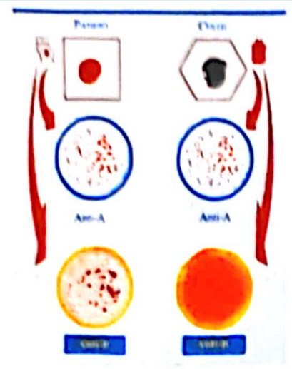

Un patient de 58 ans est admis en salle d’urgence devant un trouble de la conscience. Aucun témoin n’a assisté à l’évènement. Les antécédents du patient incluent un remplacement mécanique de valve mitrale en 2018, une insuffisance cardiaque de type 2, une hypertension artérielle, une fibrillation auriculaire chronique et un diabète de type 2 insulino-requérant.
Son traitement habituel comporte de la coumadine 5mg/jour, du ramipril 5mg/jour, du bisoprolol 2,5mg/j, de l’insuline lente 10UI - 0UI - 10UI et de la Metformine 1gx2.jour.
Sa réponse motrice à la stimulation nociceptive est en flexion sans signe de retrait, il ne présente pas de réponse verbale ni oculaire. Les pupilles sont intermédiaires et réactives.
Examen clinique
115 Kg pour 181 cm (IMC 35)
Pression artérielle : 135/80 mmHg,
Fréquence cardiaque : 70 battements par minute
Respiratoire : SPO2 à 96%,
Dyspnée d'effort grade 2, STOP BANG =3
Cardiovasculaire : absence de signe fonctionnel, < 4 MET (2 étages)
Ventilation/intubation : Mallampati : 3,
Pas d’antécédent d'IOT difficile,
Appareil dentaire (haut et bas) complet.
Antécédents médicaux et chirurgicaux
Tabagisme sevré depuis un an / BPCO post-tabagique/ suivi en ville/ dernière prise d'antibiotique en février 2024
Un bilan biologique comprenant une NFS avec hémoglobine à 9.6 g/dL, une ferritine à 85 ng/mL et un coefficient de saturation à 15%, un bilan d'hémostase normal et un ionogramme sanguin normal.
L'albuminémie est mesurée à 26 g/L pour une protidémie à 75g/L avec une pré-albuminémie à 0,1 g/L.
Le débit de filtration glomérulaire est estimé à 110 mL/min
Bilan EFS: Groupe sanguin AB+
📝 Questions
Question 1
Identifier les facteurs de risque de ce patient pouvant poser difficulté pendant l'induction de l'anesthésie générale et indiquez vos préconisations en regard ?
Question 2
A partir du bilan de ce patient, quelle(s) anomalie(s) identifiez-vous ? Y-a- t-il une ou des mesures de correction à mettre en œuvre avant l'intervention ?
Question 3
Au cours de la prise en charge au bloc, l'équipe est confrontée à un abord vasculaire difficile. Cette constatation pouvait-elle être anticipée ? Si oui, comment ? Quelle est votre conduite à tenir ?
Question 4
Quels sont les principaux éléments de votre stratégie de prise en charge anesthésique au bloc opératoire ?
Question 5
Dans le cadre d'une stratégie de réhabilitation accélérée en chirurgie (RAC) patient, quel monitorage hémodynamique est préconisé. Décrivez l'algorithme qui vous permet de guider le remplissage ?
Question 6
Quels autres éléments propres à la chirurgie colo-rectale sont proposés dans les programmes de récupération optimisée ?
Question 7
On note un saignement brutal lors de la réalisation de la jéjunostomie. Quelle est votre stratégie immédiate et en postopératoire ?
Question 8

Finalement un culot érythrocytaire est prescrit. L'IADE vous demande au décours de la réalisation du contrôle ultime pré transfusionnel (cf photo jointe), s'il est possible de transfuser. Que lui répondez-vous ?
Question 9
Le patient est finalement extubé, quels éléments d'optimisation ventilatoire postopératoire proposez-vous en SSPI ?
Question 10
A H3 le patient présente une agitation notable avec désaturation. Quels diagnostics pouvez-vous évoquer et quelles actions proposez-vous pour les confirmer ?
Question 11
A J5, Le patient présente un épisode de frissons avec marbrures. Quelle principale complication recherchez-vous ? Quel examen prescrivez-vous et qu'en attendez- vous ?
Cas Clinique 2
Le contexte : vous admettez en réanimation une femme de 68 ans, hypotendue malgré un remplissage de deux litres de cristalloïdes reçus alors qu'elle était au SAU (Service d'Accueil des Urgences). Les données à votre disposition sont les suivantes :
Les données à votre disposition sont les suivantes :
Antécédent de chirurgie abdominale il y a 15 jours sur le colon transverse pour laquelle elle a reçu un traitement antibiotique pendant 7 jours
Douleur abdominale aiguë
Fièvre modérée et fluctuante
PAS : 70 mmHg ; PAM : 53 mmHg ; PAD : 35 mmHg
Fréquence respiratoire : 31 cycles par minute
Radiographie thoracique de face : surcharge des bases pulmonaires
Vous pensez à une infection intra-abdominale compliquée d'un choc septique.
📝 Questions
Question 1
Quelle est la définition du choc septique ? Comment qualifieriez-vous le degré de prise en charge ?
Question 2
Quel biomarqueur est nécessaire pour affirmer le diagnostic et quelle valeur confirme le diagnostic ? Quel est son intérêt ?
Question 3
Quelle est votre conduite à tenir thérapeutique urgente à visée infectiologique, dans le contexte décrit plus haut ?
Question 4
Pratiquez-vous à ce stade un examen à visée microbiologique supplémentaire et si oui lequel et dans quelles conditions ?
Question 5
Quel est votre objectif initial en termes de pression artérielle moyenne ?
Question 6
Après un remplissage vasculaire adapté, quelle est la stratégie en termes de vasopresseur de première et seconde ligne ?
Question 7
Quel traitement adjuvant à visée hémodynamique mettre en place si le choc persiste ?
Question 8
Comment surveiller à l'aide d'un examen clinique la réponse aux traitements ?
Question 9
Quel biomarqueur d'oxygénation peut refléter un débit cardiaque inadapté dans le cadre du choc septique ? Quels sont ses 4 déterminants ?
Question 10
Quel est le calcul de la pression artérielle pulsée et que reflète-t-elle en terme hémodynamique ?
Question 11
Quel type de médicament utiliser en cas de défaillance myocardique dans le cadre du choc septique?
Question 12
La patiente présente des critères de syndrome de détresse respiratoire aigüe (SDRA), quelles seront vos prescriptions concernant le réglage du ventilateur ?
🚀 Rejoignez notre formation complète
Cette annale fait partie de notre programme de formation. Découvrez notre préparation intensive avec corrections détaillées pour maximiser vos chances de réussite aux EVC.